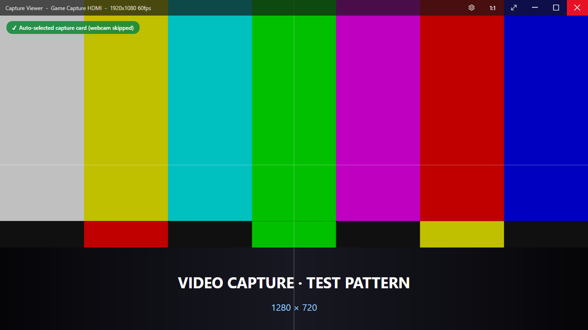
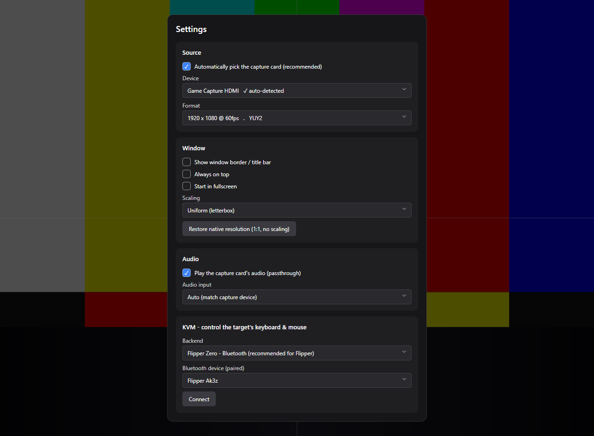
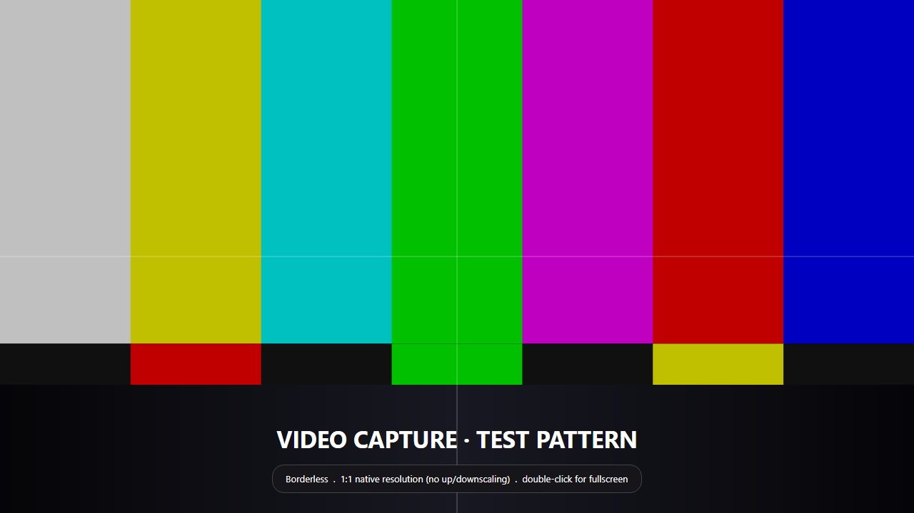

Your capture card,
in a plain window.
Stop running OBS just to look at an HDMI source. This shows the feed in a borderless, 1:1‑native window — auto‑detecting the capture card and skipping your webcam.

Does one job, well
Borderless by default
A clean, chromeless window. Flip a real border on in Settings or with Ctrl+B.
Auto‑hiding controls
An overlay bar holds minimize / maximize / fullscreen / close and a settings gear, then fades away. Cursor hides in fullscreen.
Finds the capture card
Name + capability heuristics prefer an HDMI/USB card over a webcam. Always overridable.
1:1 native resolution
One source pixel = one screen pixel — no up/downscaling. Per‑monitor‑V2 DPI aware. Ctrl+0.
Double‑click fullscreen
Double‑click the picture to toggle fullscreen. Drag it to move; drag the edges to resize.
Watchdog + hotplug
"No device / signal lost" overlay with one‑click rescan, auto‑reconnect when the source returns, and a built‑in test pattern stand‑in.
Audio passthrough
Plays the card's HDMI audio through your default output, auto‑matched to the video device. Toggle with Ctrl+Shift+M.
Snapshot + scaling
Ctrl+S saves a PNG. Choose Uniform / Fill / 1:1 scaling. Single‑instance so two launches don't fight the device.
In action


Optional KVM
Drive the captured machine's keyboard and mouse from the viewer — great for a headless mini‑PC.
- CH9329 dongle recommended · ~$10USB‑serial → HID. Driven over a COM port; HID side plugs into the target. Absolute mouse supported.
- Flipper Zero — Bluetooth experimentalPC pairs over Bluetooth and writes the Flipper's serial GATT directly; a companion app re‑emits USB HID to the target. Relative mouse only. USB/serial fallback too.
- Loopback no hardwareLogs reports so you can verify mapping without a dongle.
Shortcuts
| F11 / double‑click | Toggle fullscreen |
| Esc | Exit fullscreen |
| Ctrl+0 | Restore native resolution (1:1) |
| Ctrl+B | Toggle window border |
| Ctrl+S | Save snapshot (PNG) |
| Ctrl+Shift+M | Toggle audio passthrough |
| Ctrl+, | Open Settings |
| Ctrl+M | Minimize |
| Scroll Lock | Grab / release KVM control |
Get it
One self‑contained file. Download, run, done.